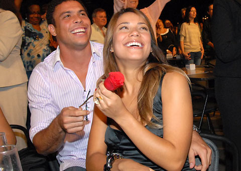
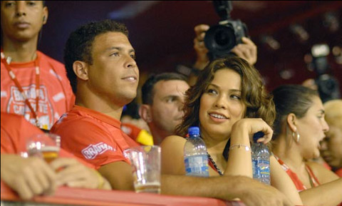
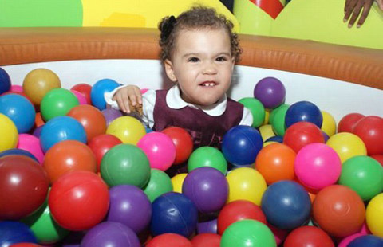
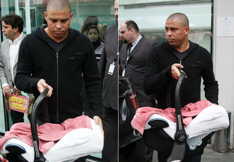

Khi vụ scandal với dân đồng tính bị phanh phui, và liên tục phải làm việc với cơ quan cảnh sát, Ronaldo rơi vào tình trạng tuyệt vọng. Maria Beatriz quyết định rời bỏ và không liên lạc càng khiến "chàng béo" chán nản.

Dù thương con trai, nhưng bà Sonia vẫn tôn trọng quyết định của Maria. Bà cho rằng, Ronaldo có lỗi nên anh phải tự mình gánh lấy hậu quả, và Maria có quyền lựa chọn con đường của mình.
"Maria còn trẻ và lại là đứa con gái có học thức, nên xứng đáng được hưởng một cuộc sống hạnh phúc. Tôi biết, nó vừa trải qua một cú sốc kinh hoàng, cũng giống như bản thân tôi. Không có bất kỳ ràng buộc nào cả, Maria được tự do lựa chọn tương lai".
Maria đã chọn giải pháp là loại Ronie khỏi tâm trí. Cô tập trung toàn bộ thời gian cho khóa học cấp tốc tại Paris.
Tuy nhiên, càng cố gắng quên thì Maria càng nghĩ về Ronie. Thậm chí, chương trình học của Maria đã có sự thay đổi, do cô để hình ảnh của Ronaldo làm ảnh hưởng. Từ đó, Maria hiểu rằng, cô cần Ronie cũng như anh đang cần cô hơn bao giờ hết.

Những cuộc gọi điện được Maria thực hiện về Brazil, cho bà Sonia, diễn ra hàng ngày. Hiểu được lòng cô gái trẻ, lúc đó đang mang trong mình giọt máu của Ronaldo, bà gợi ý cho Ronaldo sang Paris để kiểm tra lại vết mổ đầu gối, nhưng thực ra là để thu xếp cho anh gặp Maria.
Thế là, chỉ 3 tuần sau khi có ý định chấm dứt hoàn toàn chuyện tình cảm với Ronie, người ta bắt gặp Maria say đắm bên anh giữa Paris hoa lệ. Họ trao nhau những nụ hôn ngay trên đường phố, cùng đi mua sắm và xem hát.
Các bác sĩ kết luận chấn thương đầu gối của Ronie tiến triển cực kỳ khả quan. Đồng thời, vết thương lòng của anh cũng được Maria hàn gắn. Ronie nhanh chóng lại sự cân bằng trong cuộc sống, mà chỉ ít ngày trước tưởng như không thể trở lại.
"Tôi mang ơn Maria. Cô ấy đã sưởi ấm trái tim tôi. Nếu không có tình yêu của Maria, không biết đến bao giờ tôi mới vượt qua được sự cố đó, và cũng khó mà bình phục chấn thương để được trở lại sân cỏ" - Ronaldo tâm sự trên kênh Globo TV.

Mọi thứ diễn ra với Ronie theo chiều hướng tốt đẹp. Chấn thương bình phục sớm hơn dự kiến giúp "Người ngoài hành tinh" trở lại tập luyện, và ký hợp đồng với Corinthians đầu tháng 12/2008.
Không lâu sau đó, đúng lễ Giáng sinh 2008, thêm một sự kiện quan trọng nữa diễn ra trong cuộc đời. Đích thân Ronie đã đưa Maria đến bệnh viện ở trung tâm Rio de Janeiro, và tại đây cô sinh cho anh một bé gái kháu khỉnh.
Sự ra đời của bé gái Maria Sophia, cũng là đứa con thứ hai của Ronaldo - sau bé trai Ronald với người vợ đầu Milene, giúp anh chín chắn hơn rất nhiều. Không còn những cuộc say bí tỉ, phớt lờ những cô nàng nóng bỏng luôn mời gọi bên cạnh, trừ khi thi đấu cho Corinthians, Ronie luôn ở bên cạnh Maria và con gái.
Ronie thực sự hạnh phúc bên cạnh vợ và con gái. Có thể nói, chính bé gái Maria Sophia đã tạo nên một bước ngoặt mới trong cuộc sống và suy nghĩ của Ronie.

Roberto Carlos, nhà thiết kế thời trang Brazil và là bạn của hai người, cho rằng Ronaldo đã tìm được tình yêu đích thực, sau cuộc hôn nhân đầu tiên và một loạt mối tình khác. Hay nói cách khác, Carlos cho rằng "ngựa chứng" Ronaldo đã được nàng Maria "thuần hóa".
Nửa năm trước, Ronaldo lần thứ 3 được làm cha. Lần này cũng là một bé gái, được anh đặt tên Maria Alice. Điều đặc biệt, Maria Alice có cùng ngày sinh với Ronald (ngày 6/4, cách nhau đúng 10 năm).
Sau những rắc rối, đây là lúc để "người ngoài hành tinh" tận hưởng thời gian ngọt ngào bên "bộ ba Marias" (của mình, khi mà sự nghiệp cầu thủ của anh cũng chuẩn bị khép lại.

Ý kiến của bạn
- Điện thoại không hiển thị lên trang
- Email không hiển thị lên trang
- Nội dung không quá 1000 từ, viết bằng tiếng Việt có dấu.